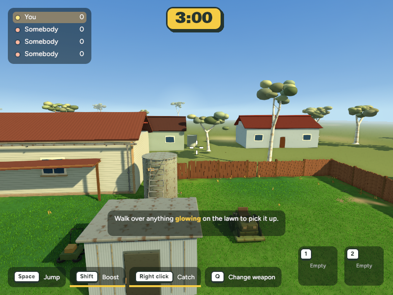
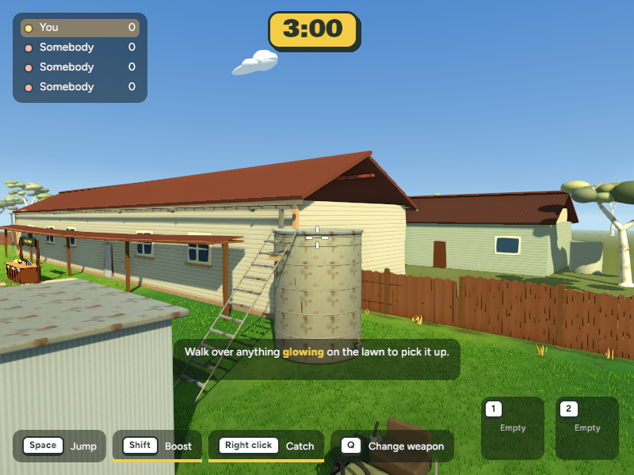
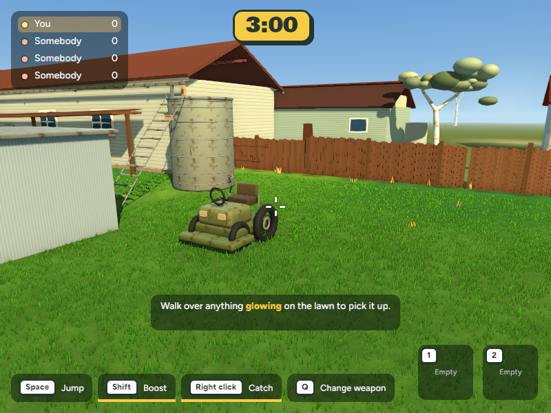

Rust desktop and browser-source pass · 16 November 2026

The climb route sits beside the house: shed-side approach, tank ladder and roof edge.

The ladder has visible rails, rungs and tank hooks. The tank's ribbed metal, rain marks and inspection plate are visible at player height.

The shed corner now has a ride-on mower with a pressed deck, wide tyres, seat, steering wheel, headlights and muffler. It stays decorative and does not add a new obstacle.
What changed
The tank has circular player-side collision and a standable lid. Its ladder is represented by a narrow walkable slope under the visible rungs.
Sixteen short roof collision patches follow the front roof plane; the house body blocks walking through the building. A jump from the tank lid lands on the sloped roof and remains stable.
Rust lawn blades are about 25% taller, slightly wider and modestly denser. The browser lawn texture has many more fine grass strokes. Grass remains visual-only.
The mower, ladder and roof add no item scoring, movement speed, round timing or other-mode map-size changes.
Rust movement and workspace tests cover the new collision and landing. Browser JavaScript syntax passes. The browser scene was not visually captured in this review; its rendering and collision changes mirror the Rust layout.